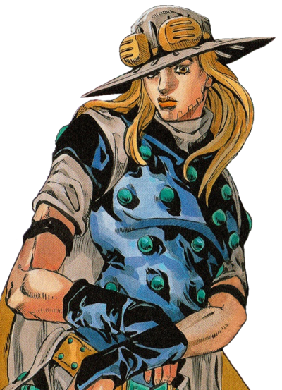
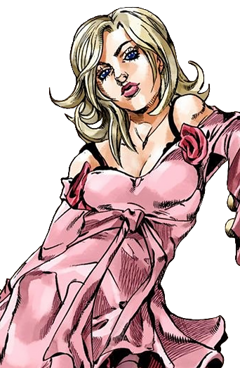
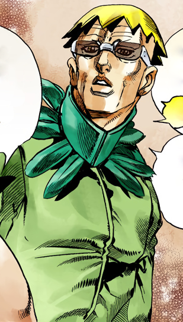
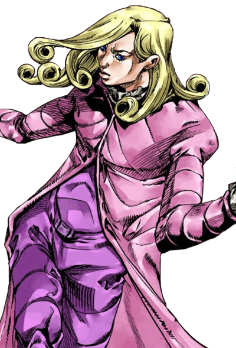
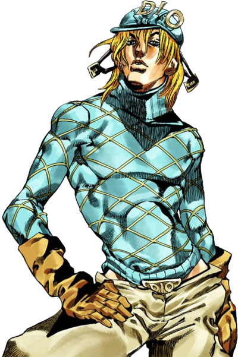
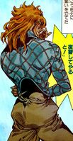
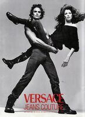
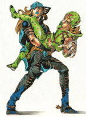
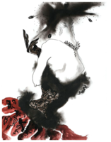

Introduction
Steel Ball Run is the 7th part of the JoJo Bizarre Adventure which started from January 19, 2004 to October 18, 2024. This part has not recieved an adaption but rumors have it, It might be announced this year in the next JoJo event!
Johnny Joestar
Johnny Joestar undergoes significant character development throughout the story, displaying determination, strategic intelligence, evolving morality, and a profound pursuit of redemption, all while forming a crucial bond with his fellow racer and mentor, Gyro Zeppeli.
Plot
Set in the year of 1890, this story follows the newest Joestar named Johhny Joestar which takes place in an alternate universe. He is a paraplegic ex-jockey who is taking part in a race across the continent of the United States American. The race is called Steel Ball Run Horse Race.
As the race progresses, the particupants encounters numberous challenges, including rivalries, betrayals, and mysterious enemies with powerful stands. Everyone has their own motivations and goals to win the grand prize!
Major Characters
Johnny Joestar

Gyro Zeppeli
Lucy Steel
Steven Steel
Funny Valentine
Diego Brando
References
Ultra Jump 2005 Issue #8 (Cover) July 19,2005
Gianni Versace Fall/Winter 1993 M: Stephanie Seymour/Marcus Schenkenberg Ph: Richard Avedon
Ultra Jump 2005 Issue #10 September 17, 2005
Nina Ricci Haute Couture 1984 A: Tony Viramontes
The stands abilities will not be revealed.